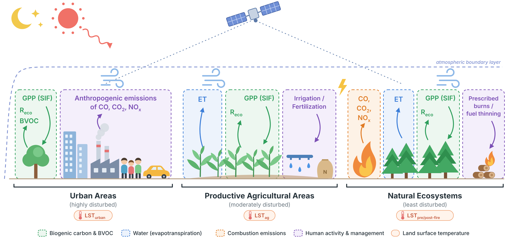
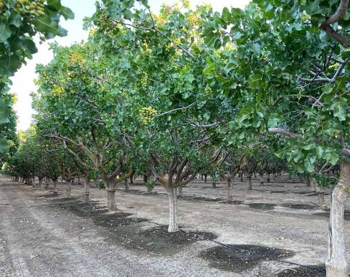
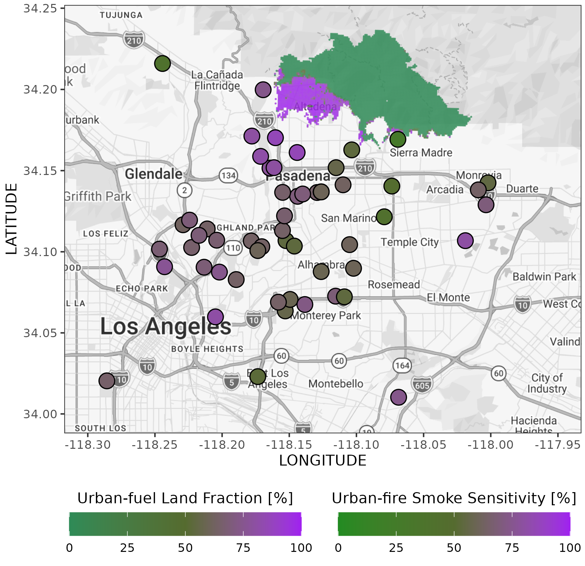
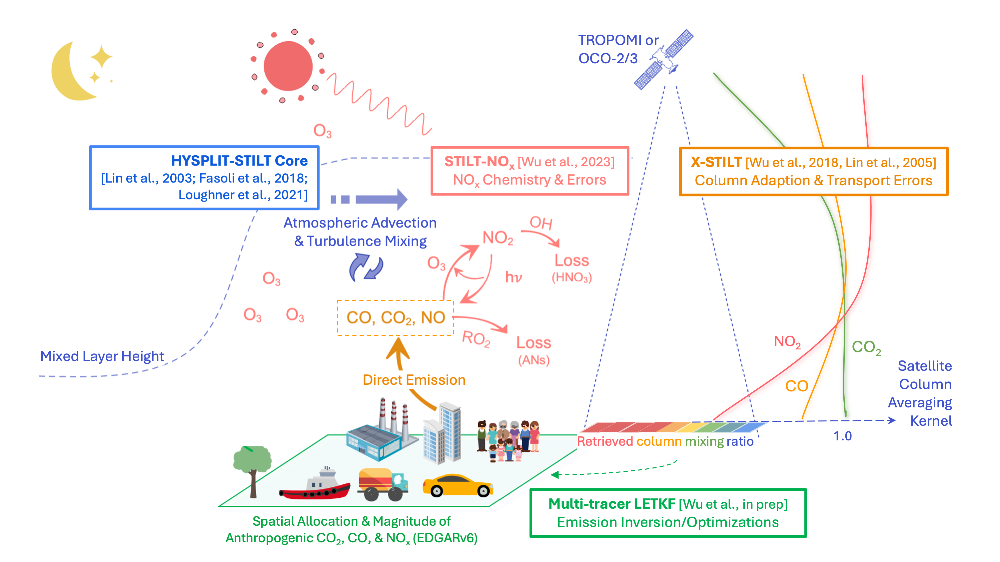
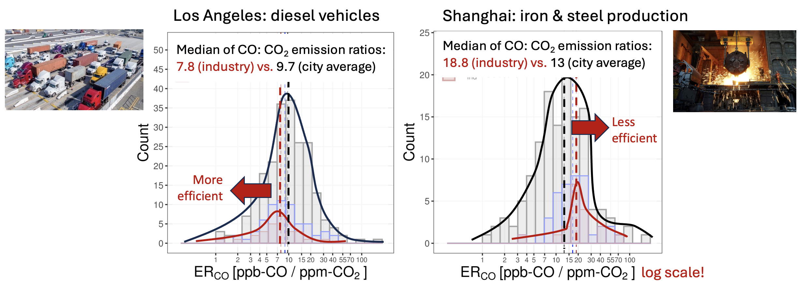
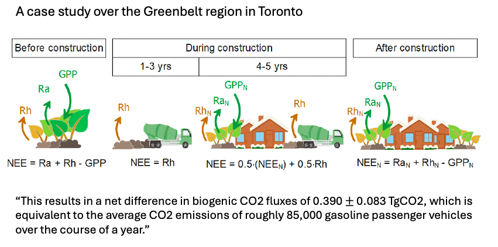
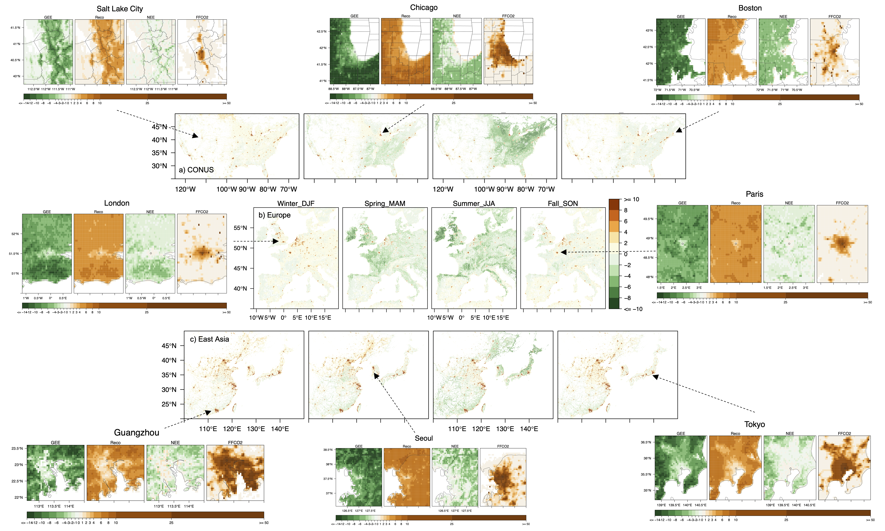
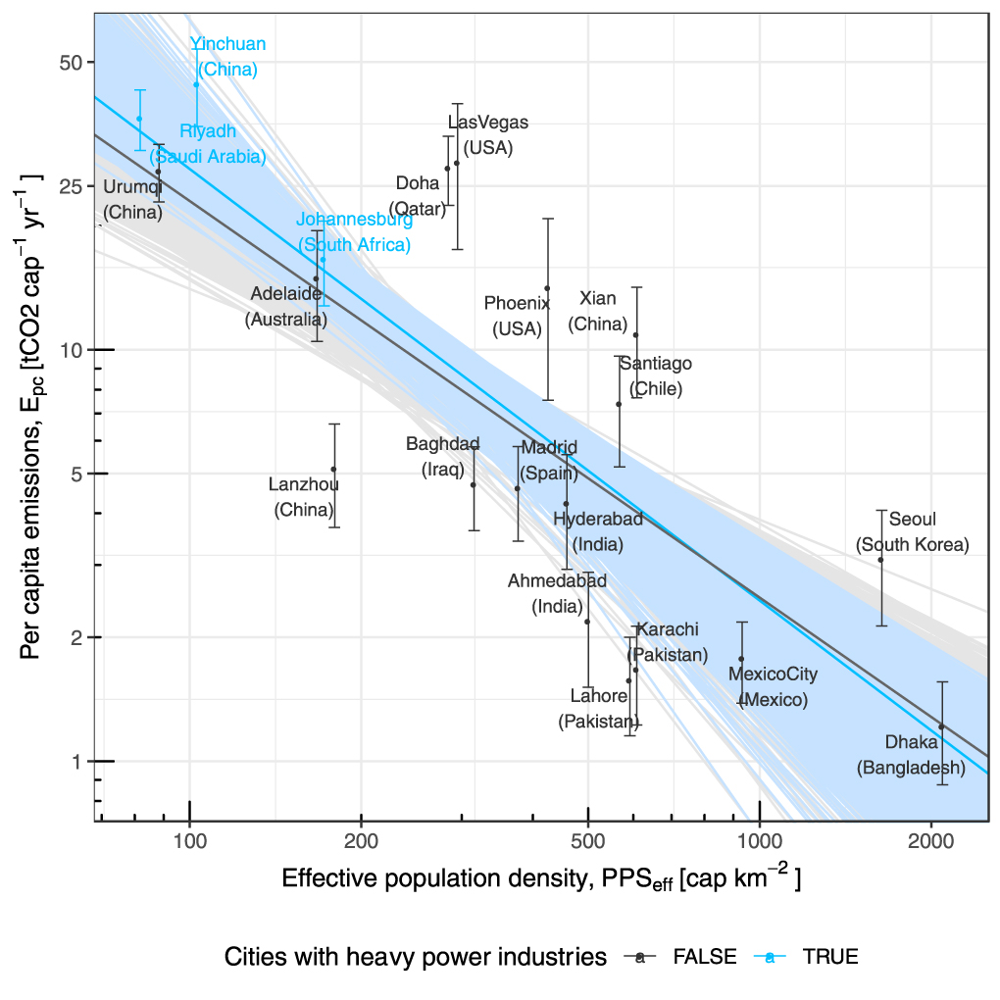
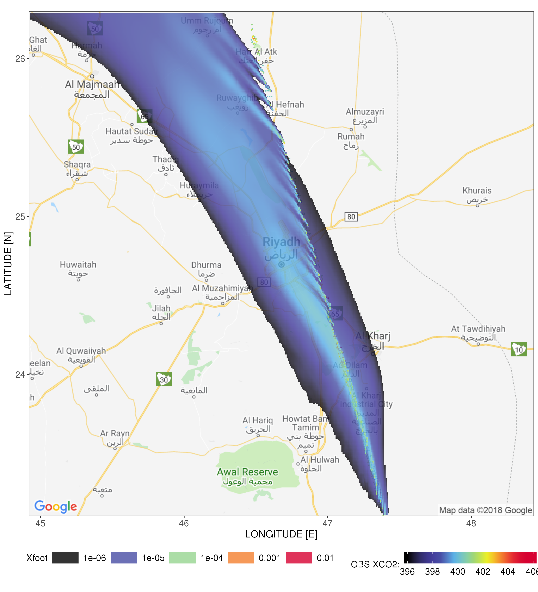

The overarching goal of our group’s research is to investigate human and environmental impacts on carbon, pollution, water, and energy fluxes using atmospheric and land surface observations as key constraints!

Current Grants
🌾 NASA TEMPO/ACX (2025–2028, PI: Dien Wu)
🔥 NASA Carbon Monitoring System (CMS) (2025–2028, PI: Junjie Liu)
Research Topics (Latest First)
🌾 Agricultural water use and soil emissions
🔥 Fire emissions, fire weather and tracer dispersion
🚗 Bridging GHGs and air pollutants: CO, NOx
🌆 Urban carbon cycle: biogenic and anthropogenic CO2
I. Agricultural Fluxes and Management 🌾
Q1: How much water do crop trees consume in semi-arid croplands?
Drip irrigation in a pistachio orchard in the San Joaquin Valley (photo by Dien) 
In productive agricultural regions, high irrigation demand on surface water and groundwater can lead to a series of environmental issues, including severe aquifer depletion, land subsidence, river flow reduction, soil salinization, and ecosystem degradation. Water rights in California’s Central Valley add another layer of pressure; fair and sustainable water allocation depends on knowing how much water crops actually consume.
Molly and Dien are actively evaluating the impact of irrigation on evapotranspiration over productive croplands and forests in semi-arid regions using several approaches (e.g., from land-surface and atmospheric perspectives).
Q2: Can we learn anything new about soil NOx fluxes from TEMPO observations?
Olivia and Dien are actively quantifying soil NOx fluxes and their responses to environmental and management factors using the geostationary TEMPO satellite.
II. Fire Emissions and Fire-induced Weather 🔥
Q2: How does fire-induced weather affect pollution dispersion?
Megan is actively working on this emerging topic by comparing meteorological fields with and without fire-induced weather for the Dixie Fire (July–October 2021) and evaluating wind, PBL, fire spread, and tracer dispersion (with TROPOMI CO as a benchmark). She will present this work at her first AGU Fall Meeting in December 2026! Stay tuned!
Wu et al., submitted 
Q1: Do urban fuels contribute differently from wildland fuels in wildland–urban interface (WUI) fires?
Recent destructive WUI fires, such as the 2021 Marshall Fire, the 2025 Eaton Fire (driven by Santa Ana winds, it destroyed approximately 9,419 structures and burned 5,675 hectares), and the 2026 Spokane fires, occurred under diverse meteorological, fuel, geographic, and ambient air-quality conditions, demonstrating the challenge and urgency of understanding their dynamics and impacts.
Fuel loading and fuel consumption in WUI fires are difficult to represent accurately, yielding substantial uncertainties in fire emission inventories. We leverage observations of PM2.5 mass concentrations from the dense PurpleAir network and lead (Pb) mass concentrations from the ASCENT network to quantify WUI fire emissions from the 2025 Eaton Fire in Altadena (Wu et al., submitted).
III. Bridging climate-related GHGs and environment-related air pollutants 🚗
Q2: Can perturbations in (sectoral) emissions be detected from space?
This question is increasingly critical as more and more cities commit to reducing emissions of GHGs and air pollutants! 
Wu et al., GMD, 2023
-
We developed a simplified non-linear chemical transport model for NOx chemistry (Wu et al., GMD, 2023), which is less time-consuming than full chemical models. Still, the STILT-NOx model preserves and reproduces the non-linear relationship between NOx emissions and NOx chemistry.
-
The importance of addressing NOx chemistry is emphasized when jointly using satellite observations of GHGs and air pollutants. Key factors affecting how much NO is present as NO2 and the chemical loss of NOx include the time of year and day, and the distance between emissions and satellite observations (see Fig. 9 for more clues).
-
This model is now being coupled to a chemical inversion to optimize multiple species from space (Wu et al., in prep). Email me if you are interested in my multi-tracer modeling and inverse system.

Wu et al., ACP, 2022 
Q1: Do heavy industries within an urban area burn less efficiently?
Yes and no; it depends on the specific type of industrial activity. By combining space-based CO and CO2 observations (Wu et al., ACP, 2022), we examine several key factors that can influence the interpretation of ERCO using TROPOMI and OCO-3, and identify distinct combustion efficiencies between cities and within a city (i.e., between areas strongly affected by heavy industry and the rest of the city). The novelty comes from integrating a high-resolution urban land cover map with atmospheric transport to identify industry-affected observations.
For example, industries in Los Angeles are more “efficient” than the city average, likely due to the large number of diesel trucks and vessels at the Port of LA (left panel). In contrast, industrial activity in Shanghai is dominated by steel production, which generates much more CO relative to CO2 than the city average (right panel).
Madsen et al., Elementa, 2024 
IV. Biogenic CO2 fluxes over cities 🌳
Q2: How will land-use change in cities affect CO2 sequestration?
Check out this super cool study led by Sabrina Madsen from the University of Toronto! Sabrina utilized and improved SMUrF over high-latitude regions using downscaled TROPOMI SIF and investigated the impact of urban land-use change on carbon sequestration (Madsen et al., 2024).
Q1: How much CO2 does urban vegetation take up?
A new approach to separate biogenic fluxes from anthropogenic emissions: A Model for Urban Biogenic CO2 Fluxes: Solar-Induced Fluorescence for Modeling Urban biogenic Fluxes (SMUrF, Wu et al., GMD, 2021).
Wu et al., GMD, 2021 
- Leverages Solar-Induced Fluorescence (SIF) to predict Gross Primary Production and a neural network to estimate Ecosystem Respiration. Model scripts and the data release are available here.
- Quantifies and validates biogenic fluxes against flux tower observations around the globe.
- Reveals differences between biogenic and anthropogenic fluxes across 40 cities.
- Reveals the urban–rural contrast in NEE fluxes and their diurnal cycles.
- Estimates their imprints on atmospheric CO2.
SMUrF has been increasingly used and evaluated over Europe and Canada:
- against radiocarbon measurements in London (Zazzeri et al., GRL, 2023);
- against independent eddy-covariance towers in Canada (Madsen et al., JGR Biogeosciences, 2025);
- as biogenic priors for testing the ability of MicroCarb over Paris and London (Wu et al., AMT, 2023).
Wu et al., ERL, 2020 
V. Anthropogenic CO2 emissions from cities 🌆
Q2: Does an individual in denser cities produce more carbon?
Scientific gap & significance: We provide the first independent observational constraint on per capita emissions and their relationship with population density and per capita GDP using spaceborne CO2 measurements from OCO-2. Previous urban-scaling studies relied on bottom-up inventories with implicit assumptions about the relationship between emissions and population (density). Our method provides (1) an objective definition of urban extent and (2) observational constraints from satellite-retrieved mixing ratios, both of which were lacking in previous studies.
Key finding: By combining satellite data with population density data, we derived independent estimates of per capita CO2 emissions for 20 cities around the world and found that they are anti-correlated with population density (Wu et al., ERL, 2020), shedding light on sustainable urban development. Yet, such anti-correlation between emissions per capita and population density is partially offset by the effect of GDP. We also identify whether cities act as “net exporters” or “net importers” of carbon, which matters for carbon accounting.
This work was featured by NASA and the U. This method has now been applied to reveal inter-city variability across 77 cities, which together account for about 16% of global urban CO2 emissions (Wilmot et al., ERL, 2024).
Wu et al., GMD, 2018 
Q1: How much fossil fuel CO2 do cities produce?
To answer this question from a top-down perspective, we developed the column version of the Stochastic Time-Inverted Lagrangian Transport model, X-STILT (Wu et al., GMD, 2018) based on the STILT model version 2 (Lin et al., 2003; Fasoli et al., 2018). X-STILT now works with other sensors (e.g., TROPOMI, TCCON, and EM27/SUN) and is increasingly used by the GHG remote-sensing community!
- Initially designed to interpret OCO-2 data by incorporating sounding-specific weighting profiles (e.g., AK and PWF); it has since been modified for OCO-3 and TROPOMI (CO, NO2, CH4).
- Provides the atmospheric transport and calculates the imprints of potential upwind sources and sinks on downwind satellite column measurements (the so-called “column footprint”).
- Provides comprehensive estimates of horizontal and vertical transport uncertainties in column CO2 (XCO2).
- Model code is archived on GitHub, with a Cesium animation demonstrating how the model works.